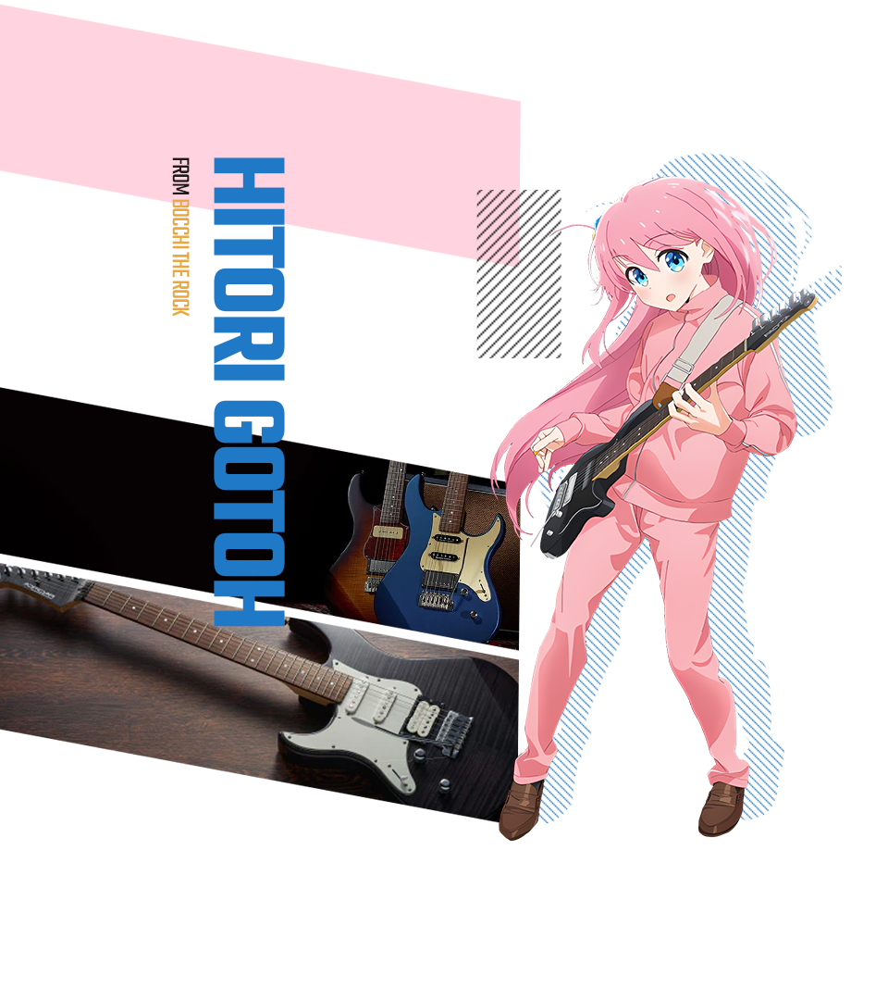

Hibike is place where you can find musical instruments from your favorite anime
titles.
Some of the best loved anime series have revolved around musical performance,
but have any of them ever made you want to learn to play an instrument yourself?
In honor of musical instrument day in 2023, Hibike Store held an annual survey to find out
which instruments fans most wished they could play after seeing anime
heroines having so much fun. Things seem to be exciting that this year's result is significantly
different from last year that gave us and our customer big surprises of how it changed across time.
Let's dig in to find out which instrument your beloved characters is playing. The below slideshow will
present our top 3 anime musical instruments this year.

#1 Electric Guitar
YAMAHA PACIFICA series
The most favorite one is an Electric Guitar used by Hitori "Bocchi" Gotoh (Kessoku Band)
from TV series anime "Bocchi The Rock!" (Onair 2022).
This is a high quality model for a wide range of genres, generously infused with ideas
and technologies developed over 50 years of Yamaha guitar history.
Bocchi uses a PAC600series PACIFICA611VFM model that has been custom-made and customized.
Her previous guitar is a Gibson Les Paul borrowing from her father.
However, its first string was broken during the performance in her school's festival.
After the incident, she decided to buy a new guitar to avoid causing any trouble like that
to her father's guitar.
The second one is a Gibson Pre-'08 Les Paul Standard '50s in Heritage Cherry Sunburst
used by Yui Hirasawa in "K-On!" series.
She names it Giita, which quite literally means "guitar". In 2008, Gibson gave the
"Standard" name to a new design of Les Paul, while the old Standard was renamed
the Traditional; worth noting because the manga started in 2007. She uses D'Addario
EXL145 strings on it, oddly heavy strings for her and the music she plays. Of course,
being Yui, she likely has no idea there are different sizes of strings, as she didn't
even know they had to be changed at first. In the manga, its pickup selector switch is
always set to the "Treble" position, which is usually well suited for lead guitar. In the anime,
it's always set to the middle
position, which uses both pickups, giving a more full sound, well suited for the low,
Power Chord-heavy riffs Yui tends to play.
The third one is YAMAHA YEP-621 - an Euphonium played by main character of anime Sound!
Euphonium (Onair 2015), Kumiko Oumae.
Euphonium is a member of the brass family and the titular instrument of Sound! Euphonium. In
addition, the anime title is inspiration
of our store name (Hibike! Euphonium) since it's our favorite music anime in 2010s after K-On!
series.
The euphonium is used in symphonies, orchestras, school bands, and marching bands. It can be
played in either bass or treble clef,
with the bass clef written in concert pitch as a C instrument, and the treble clef being written
in B♭ sounding a major ninth,
which is an octave plus a whole step, lower than written. This change in clef does not affect
the way the instrument sounds,
it is simply different between sheet music. It is a non-transposing instrument known for its
distinctive tone color,
wide range, a variety of character and agility.